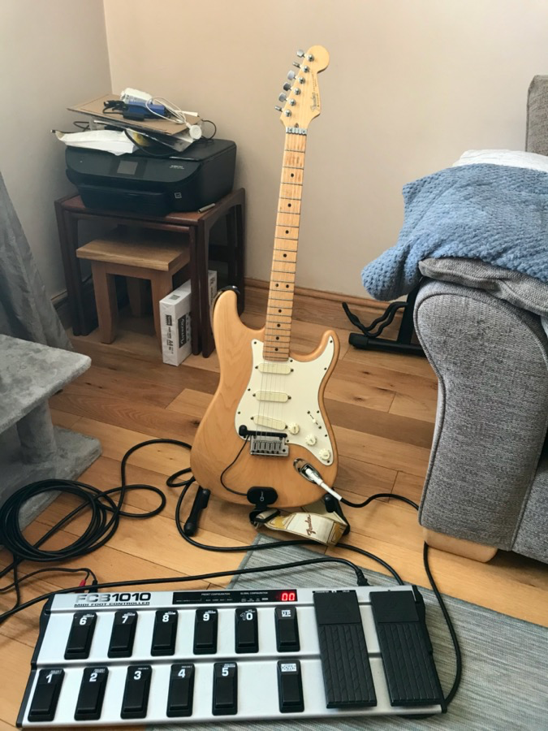
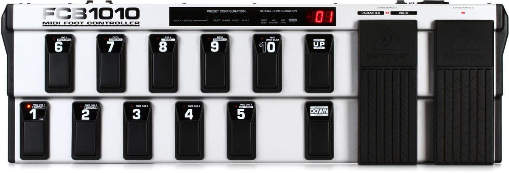
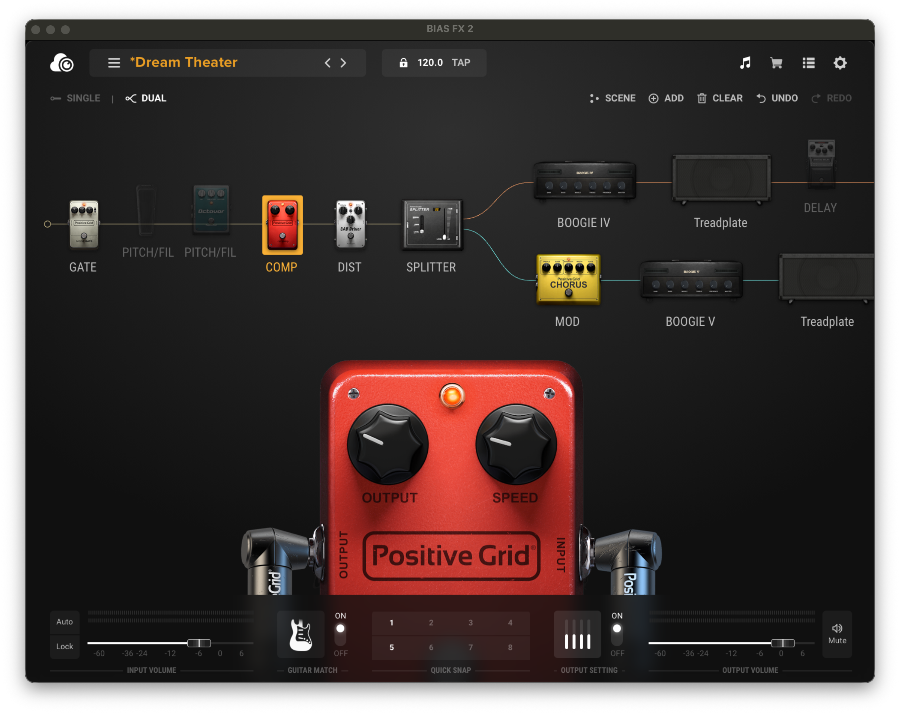
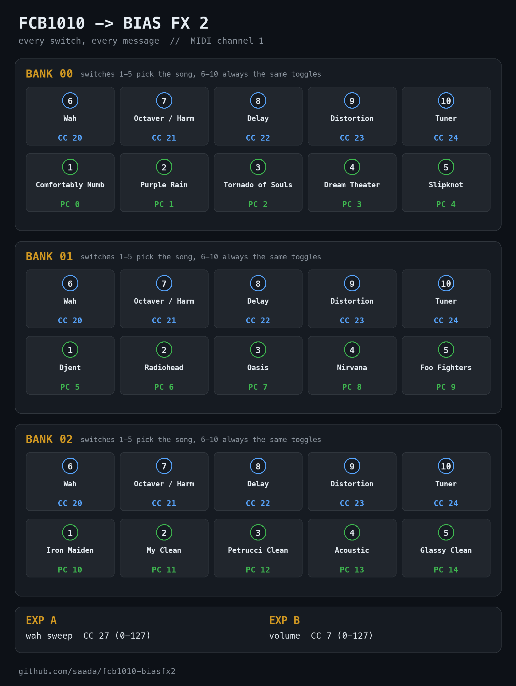
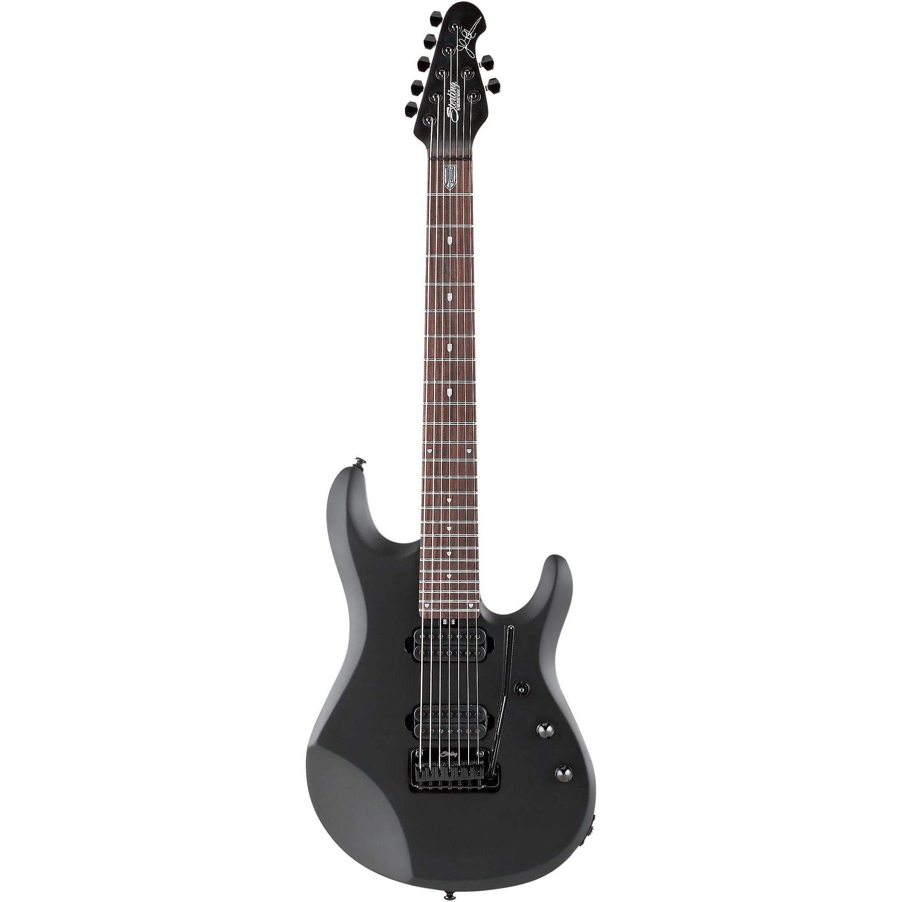

We all have that one piece of gear. Mine was a Behringer FCB1010, a two-foot slab of MIDI pedalboard that has followed me through three apartments and never actually worked. Not once, not properly. Every couple of years I'd drag it out, lose an evening to MIDI menus, get maybe two switches doing something useful, and put it back under the desk to collect dust and silently judge me.

Not my room, but this is exactly what the setup looks like: guitar, hope, and ten switches that do the wrong thing. (photo: Scuffham Amps forum)The dream was always simple: stomp a switch, get the Comfortably Numb solo tone. Stomp another, Purple Rain cleans. Rock the expression pedal, wah. And the real dream, the one that kept me dragging this thing back out: playing my Iron Maiden repertoire properly. Seventh Son harmonies, The Wicker Man gallop, both Murray and Smith parts coming out of one guitar, hands never leaving the strings. The reality was a pedalboard from 2004 and an amp sim from this decade, BIAS FX 2, that flatly refuse to understand each other out of the box.
Skill issues? Sure. But gosh, are these two complicated to wire together.
Why everyone gives up on the FCB1010

Ten switches, two expression pedals, one two-digit display, infinite menu-diving. (photo: Sweetwater)Press one switch on a factory-fresh FCB1010 and it doesn't send a MIDI message. It sends seven: five Program Changes and two Control Changes, on multiple channels, all at once. BIAS FX 2's MIDI Learn dutifully grabs whichever of the seven arrives first. Congratulations: your delay toggle is now mapped to garbage.
The official fix is programming each footswitch from the front panel. The procedure involves holding the DOWN pedal for exactly 2.5 seconds, navigating menus rendered on a two-digit LED display, entering numbers by stepping on footswitches (10 means zero, obviously), and confirming with UP. Per value. Per slot. Per preset. My layout needed 26 presets. I did the math on that foot-dance and understood why this thing lived under the desk.
SysEx, my old friend
But the FCB1010's entire brain is 2,352 bytes. One SysEx dump. The format was reverse-engineered years ago, and there's a lovely little MIT-licensed Python library (riban-bw/fcb1010) that encodes and decodes the whole memory.
Which means the entire pedalboard can be described as data:
SONGS = [
(0, 1, 0, "Comfortably Numb"),
(0, 2, 1, "Purple Rain"),
...
(2, 1, 10, "Iron Maiden"),
]
TOGGLES = [
(6, 20, "Wah on/off"),
(7, 21, "Octaver/Harmonizer"),
(8, 22, "Delay"),
(9, 23, "Distortion/Boost"),
(10, 24, "Tuner"),
]
Edit the table, run uv run rig.py send, done. No foot-dance. The script round-trips the generated dump through the decoder before it ever touches hardware, so a typo can't brick anything.
Getting the upload to actually land taught me three things the manual buries:
- In global config mode you tap UP to change pages. Holding it does nothing. I held it for a very long time.
- After the transfer, you must hold DOWN to save. Skip it and the pedal politely discards everything. I skipped it. Twice.
- Cheap USB-MIDI cables are pathological liars. Mine passes normal 3-byte MIDI perfectly, then silently eats SysEx, and only in one direction. Pedal-to-Mac dumps vanish into the void; Mac-to-pedal uploads work fine. A MIDI monitor showing traffic proves nothing about SysEx. The only real test is counting bytes.
BIAS FX 2 has no API. It has something better.
The other half of the problem: BIAS FX 2 has no scripting interface, no import format, no automation story at all. What it does have is a data directory full of plain JSON, and nobody stopping you from reading it.
A few evenings of spelunking later, the whole map:
midi.json: global mappings. Maps Program Change numbers to preset UUIDs, plus app-level actions like the tuner (utility.tuner).GlobalPresets/<bank>/preset.json: the bank's index. Fun fact: a preset folder that isn't listed here does not exist as far as the app is concerned. Found that one the hard way.GlobalPresets/<bank>/<preset>/data.json: the full signal chain, every pedal with a stable UUID.GlobalPresets/<bank>/<preset>/midi.json: per-pedal CC wiring, referencing those UUIDs.
The scary part was signal-chain surgery. Confession: in all the years I've owned this pedalboard, I have never, not once, had the wah pedal, octaver, volume pedal, and tuner all working from the floor at the same time. That was the whole dream, and it died in MIDI Learn purgatory every single attempt. This time I wanted all four in every preset, and I was not going to click through fifteen presets to add them. Editing a 340KB JSON file with embedded scene state sounds like a great way to corrupt your tone library. Then you notice that scene snapshots reference pedals by UUID, not by position. Insert a new module with a fresh UUID, append matching snapshot entries to each scene, and everything stays consistent. The app never notices a human didn't do it.
So now one script builds a dedicated "FCB1010" bank with all fifteen presets in PC order, wires every footswitch CC to the right pedal in every preset, and inserts any missing pedals. It's idempotent. Run it twice, nothing duplicates.

The Dream Theater preset: dual Boogies. That octaver at the front of the chain was inserted by a script editing JSON. The app has no idea.The rig
Three banks on the floor:
- Bank 0: Comfortably Numb, Purple Rain, Tornado of Souls, Dream Theater, Slipknot
- Bank 1: Djent, Radiohead, Oasis, Nirvana, Foo Fighters
- Bank 2: Iron Maiden, plus four clean tones
Every bank keeps the same bottom row: wah, octaver, delay, distortion, tuner. Expression pedal A sweeps the wah, pedal B rides volume. Muscle memory works everywhere because the layout never changes.

The whole rig on one map: every switch, every message, all three banks.Stomp switch 1: Gilmour. Stomp 4 on bank 1: Nevermind. It has worked every single time since, which for this pedalboard is a personal record.

The guitar on the other end of all this: my Sterling by Music Man John Petrucci JP70. Seven strings, stealth black, equally happy playing Petrucci or pretending to be two Iron Maidens at once.But bank 2, switch 1. That's the one. JCM-style crunch, and on switch 7 sits a harmonizer wired for 3rds. I hit it, played the lead from The Evil That Men Do, and both harmony parts came out of my JP70 at once. I am not exaggerating when I say I stood in my living room grinning like an idiot. Twenty minutes later I had galloped through half of Seventh Son of a Seventh Son, kicked the wah on for a solo without thinking about MIDI even once, and ridden the volume pedal into the Moonchild intro like the last several years of dust never happened. This is what the pedalboard was for. I'd just never met it before.
We did it
Hardware I'd written off for years now does exactly what I always wanted, because both ends turned out to be automatable: one through a 20-year-old SysEx format, the other through JSON files nobody documents.
Credit where it's due: I did this whole thing pair-programming with Claude Fable, and it's the reason this post exists. I had thrown earlier AI models at this exact problem before and they'd confidently hallucinate SysEx byte layouts or tell me to "check the manual." Fable actually reverse-engineered the BIAS FX 2 file formats from my own preset library, caught its own landmines (like the bank index that makes presets invisible, or my wah stomp being globally mapped to "previous preset"), diagnosed a counterfeit MIDI cable from packet captures, and generated entire preset banks as code, both the FCB1010's memory and the BIAS FX 2 bank. Wah, octaver, volume pedal, tuner: all four working from the floor, for the first time ever, wired by a language model doing surgery on JSON files. Wild time to be alive.
The part I didn't expect: I'm playing again. Not configuring, not troubleshooting, not watching MIDI monitors. Playing. I walk past the desk, see the pedalboard, and instead of guilt I feel the pull of an unfinished Maiden setlist. That feeling was worth more than the automation.
The whole thing is open source: github.com/saada/fcb1010-biasfx2. Two single-file uv scripts, no install, tables at the top. If you have an FCB1010 gathering dust (statistically, someone reading this does), fork it, edit two tables, and go play The Trooper.
What's next
CLI commands and Python tables were the right tool for getting here, but they're still developer UX for what is fundamentally a musician's problem. The plan is a full TUI for configuring the FCB1010. Draw the pedalboard in the terminal, arrow-key around the ten switches, assign a preset or a CC to each one visually, watch incoming MIDI light up the switch you just stomped, then hit one key to upload. Same SysEx engine underneath, none of the table editing. If that sounds like something you'd use, star the repo. That's where the TUI will land.